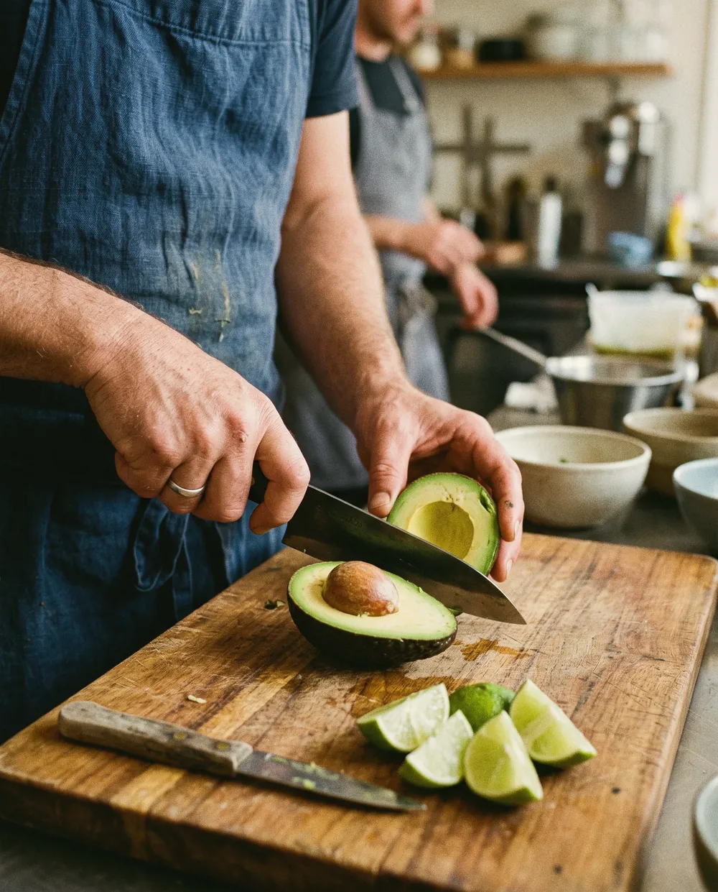
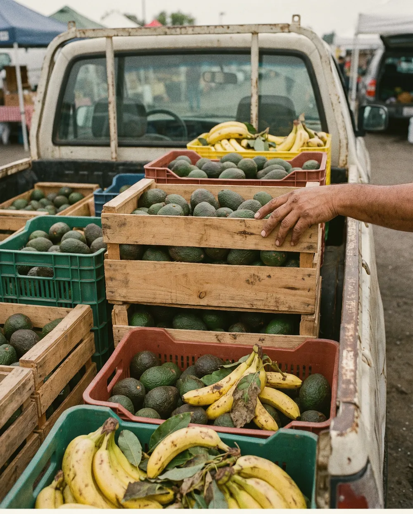
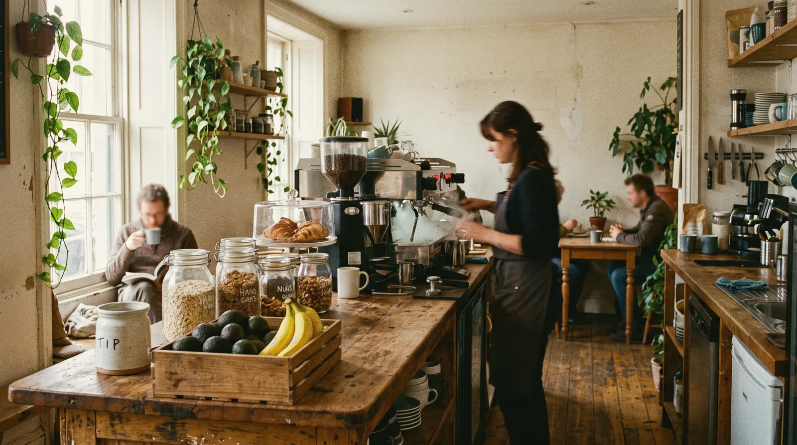

Nothing arrives in a packet. If it grew in the ground or on a tree, it can come into our kitchen. Everything else stays outside.
0g
refined sugar
0%
whole ingredients
0
local growers
0am
prepped fresh daily
Avocado
One ripe avocado, halved the moment you order. Never pre-mashed, never sitting under a lamp.
Whole avocados halved this month 0
the good stuff is at the centre
Grounded to the core.
Healthy fats, fibre, potassium. The way nature packed it — we just don't take anything out.
Explore the menu
scroll & add to your order →
KEEP IT GROUNDED · KEEP IT GROUNDED · KEEP IT GROUNDED · KEEP IT GROUNDED · KEEP IT GROUNDED · KEEP IT GROUNDED ·
Whole food. Slow coffee. Nothing in between.



We started GROUNDED because eating well shouldn't need a label to decode. Twelve growers within driving distance, one short menu, and a promise: if you can't picture where it grew, it's not on the counter.